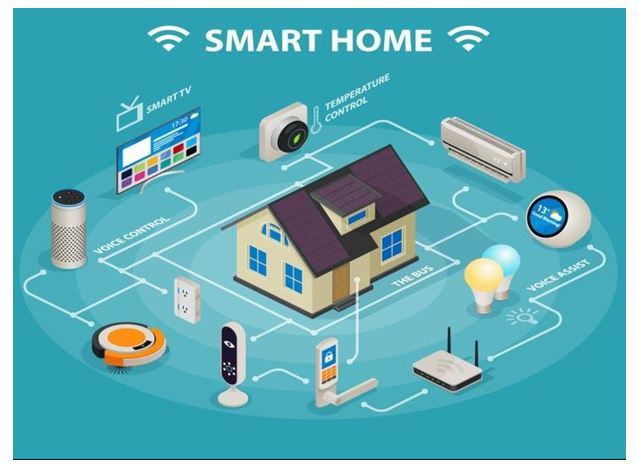
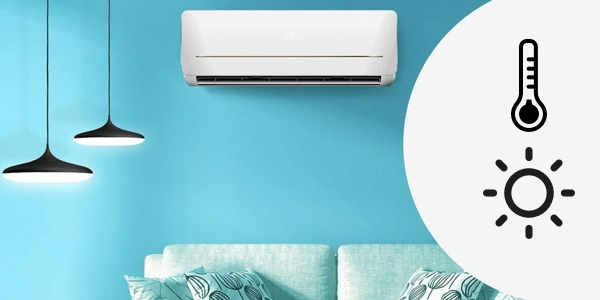
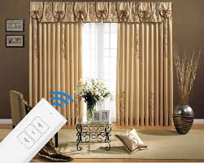

What is smart home comfort & climate ?
Definition :
A system of interconnected devices that work together to maintain ideallighting level, temperature, humidity, and air quality levels within the home.
Benefit :
Ensures maximum comfort, health, and well-being for residents by creating a personalized and healthy and comfort indoor environment that adapts to individual preferences and needs.
Discription & Application :
Lighting Control :
- Automate lighting based on ambient light conditions and preferences.
- Optimize energy usage by turning off lights when not needed.
- Adjust brightness levels to create the desired mood for different activities (dimmers).
- Dimming lights can reduce energy consumption (dimmers).
- Smart Lighting - RGBW, RGBW LED light is named after the color of the LED chips it contains. Standard RGBW LEDs consist of red, green, blue, and white LED chips. It is similar to the manufacturing principle of RGB LEDs but with the addition of a white LED chip. Except for emitting red, green, blue, and white colors, RGBW LED light is able to create a wide range of colors by mixing the lights of four chips together in different proportions.
- Moreover, large-scale lighting color mixture brings better lighting effects and a higher color rendering index. The color rendering index could be up to 95 in an optimized condition. RGBW LED light is used for applications that need colorful and high-quality lighting. It is mainly used as decoration for buildings and plants at night.
Motion sensors :
- Integrate with smart switches, motion sensors, and other devices for automated dimming based on occupancy or time of day (dimmers).
- Trigger lights to turn on/off when someone enters/leaves a room (motion sensor).
- Enhance security by detecting movement in and around the home (motion sensor).
- Monitor activity in specific areas (e.g., elderly care, pets) (motion sensor).
- Automate actions like turning on lights or adjusting the thermostat based on occupancy (motion sensor).
- Touchless technology in the home is the touchless rubbish bin. These are equipped with motion sensors that automatically open the lid when they detect movement in front of the bin. This eliminates the need to physically touch the rubbish bin’s lid, providing a more hygienic and convenient way to dispose of waste.
For more informationA/C control :
- A high-efficiency ducted HVAC system with air quality sensors and smart thermostats, allowing for zoned temperature control and integration with other home devices for optimal comfort and energy efficiency.
- Motorized vents and sensors in each room to automatically adjust airflow based on occupancy, temperature settings, and individual preferences.
- Motorized vents and sensors in each room to automatically adjust airflow based on occupancy, temperature settings, and individual preferences.
- Monitor and control the temperature in different rooms for optimal comfort.
- Integrate with smart thermostats for energy-efficient heating and cooling.
- Receive alerts for extreme temperature fluctuations.
- Geofencing to automatically adjust heating or cooling when resident leaves or arrive home
Air Handling Interface :
- Manages air distribution systems such as filter replacement reminders.
Air Quality
- An air quality sensor is a device designed to monitor and detect pollutants and environmental conditions in the air. It typically measures particulate matter (PM2.5, PM10), gases like carbon dioxide (CO2), carbon monoxide (CO), volatile organic compounds (VOCs), humidity, and temperature. These sensors can be used indoors or outdoors to ensure the air is safe and healthy to breathe.
- Monitor levels of pollutants like carbon monoxide, VOCs (volatile organic compounds), and particulate matter.
- Trigger air purifiers or ventilation systems to improve air quality.
- Provide insights into indoor air quality trends.
- Integrated humidifier or dehumidifier to maintain optimal humidity levels for comfort and health, particularly during the hot and humid summer months.
- Monitor humidity levels to prevent mold growth and improve air quality.
- Trigger humidifiers or dehumidifiers to maintain optimal humidity levels.
Curtains control
- Motorized curtains or blinds that can be scheduled or controlled remotely to regulate natural light, reduce heat gain, and enhance privacy.
- There are range of plug-and-play gadgets to open and close curtains and blinds using your smartphone, and you can even set timers for dawn and dusk, which can improve sleep habits, and also enhance home security when you’re away.
- Electric blinds can also help with energy efficiency as they can be programmed to close when the sun disappears and temperatures start to drop, maximising heat retention. And of course they’re perfect for hard-to-reach windows such as increasingly popular gable ends.